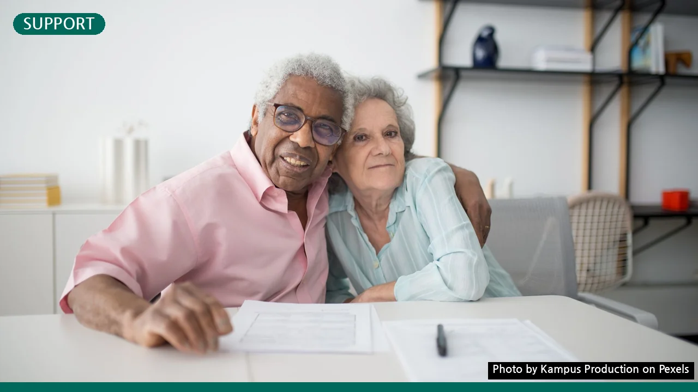

기초연금 신청 전, 놓치면 후회할 핵심 조건 3가지 체크리스트
사진: Kampus Production / Pexels (무료 이미지, 출처 표기)
기초연금 신청, 누가 받을 수 있을까요?
기초연금은 만 65세 이상 대한민국 국적을 가진 분 중 소득 하위 70%에 해당하는 어르신에게 매월 일정 금액을 지급하여 생활 안정을 지원하는 제도입니다. 단순히 나이만 되었다고 모두 받을 수 있는 것은 아니며, 소득과 재산을 종합적으로 평가하는 '소득인정액' 기준을 충족해야 합니다.
2026년 11월 기준으로, 기초연금 수급이 가능한 소득인정액 기준액은 단독가구 월 213만 원, 부부가구 월 340만 8천 원입니다. 이 기준액은 매년 변동될 수 있으므로, 신청 전 보건복지부 또는 국민연금공단 홈페이지에서 최신 기준을 확인하는 것이 중요합니다.
소득인정액, 어떻게 계산될까요?
소득인정액은 기초연금 수급자격을 결정하는 가장 중요한 요소입니다. 단순히 버는 돈만을 의미하는 것이 아니라, '소득평가액'과 '재산의 소득환산액'을 합산하여 계산합니다. 소득평가액에는 근로소득, 사업소득, 재산소득(임대소득, 이자소득, 연금소득 등), 그리고 무료임대소득이 포함됩니다.
재산의 소득환산액은 소유하고 있는 일반재산(주택, 토지, 건물 등), 금융재산(예금, 적금, 주식 등), 자동차 등을 소득으로 환산한 금액을 말합니다. 주거용 주택은 최대 1억 8백만 원, 일반재산은 지역별로 차등 공제되며, 근로소득은 월 108만 원을 공제하는 등 다양한 공제 항목이 적용되므로 정확한 계산은 전문가와 상담하는 것이 좋습니다.
놓치지 마세요: 기초연금 신청 시 필수 준비 서류
기초연금 신청은 필요한 서류를 미리 준비하면 더욱 신속하게 진행할 수 있습니다. 다음은 2026년 11월 기준으로 일반적으로 요구되는 필수 서류 목록입니다.
- 신분증: 주민등록증, 운전면허증, 여권 등 본인 확인이 가능한 신분증 원본
- 기초연금 신청서: 방문 시 비치되어 있으며, 온라인 신청 시 직접 작성
- 금융정보등 제공 동의서: 소득 및 재산 조사를 위한 필수 동의서
- 배우자 및 부양의무자 관련 서류: (해당하는 경우) 배우자의 신분증 및 금융정보등 제공 동의서 등
- 통장 사본: 연금을 받을 본인 명의의 계좌 사본
- 위임장 및 대리인 신분증: (대리 신청 시) 대리인임을 증명하는 서류
- 기타 소득 및 재산 증빙 서류: 부동산 등기부등본, 전월세 계약서, 자동차 등록증, 각종 연금 수령 내역서 등 (해당하는 경우)
개인의 상황에 따라 추가 서류가 요청될 수 있으므로, 신청 기관에 미리 문의하여 정확한 필요 서류를 확인하는 것이 가장 확실합니다.
기초연금, 어디서 어떻게 신청하나요?
기초연금은 편리하게 온오프라인으로 신청할 수 있습니다. 2026년 11월 기준 신청 방법은 다음과 같습니다.
1. 방문 신청:
- 전국 읍·면·동 행정복지센터 (주민센터)
- 국민연금공단 지사
2. 온라인 신청:
- 복지로 홈페이지 (www.bokjiro.go.kr)
주의할 점: 부정수급 방지 및 변경사항 신고
기초연금은 국민의 세금으로 운영되는 만큼, 정확한 정보 제공과 투명한 수급이 중요합니다. 다음 사항에 유의해야 합니다.
궁금한 점은 언제든지 국민연금공단 콜센터(국번 없이 1355)나 가까운 행정복지센터에 문의하여 정확한 답변을 얻는 것이 좋습니다. 정확한 정보와 철저한 준비로 안정적인 노후를 위한 기초연금을 놓치지 마세요.
🔗 이 글도 함께 보면 좋아요: 기초연금 2026년 수급 자격, 놓치면 후회할 핵심 기준과 신청 방법